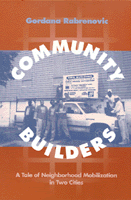

Addressing relevant urban issues, a careful look at the relationships between neighborhood associations and development
Addressing relevant urban issues, a careful look at the relationships between neighborhood associations and development


 Addressing relevant urban issues, a careful look at the relationships between neighborhood associations and development
Addressing relevant urban issues, a careful look at the relationships between neighborhood associations and development

|  |
Community BuildersA Tale of Neighborhood Mobilization in Two CitiesGordana Rabrenovicpaper EAN: 978-1-56639-410-9 (ISBN: 1-56639-410-4) |
In the 1980s the failure of corporate strategies and trickle-down economics led to gross inequalities among many U.S. neighborhoods and cities. By examining and comparing a gentrifying and a low-income neighborhood in two medium-sized cities, Gordana Rabrenovic shows how the problems they faced are typical of a number of neighborhoods nationwide. In particular, Rabrenovic focuses on the relationship between neighborhood associations and urban restructuring, arguing persuasively that the success of neighborhood associations depends more on the city in which the neighborhood is located than on the neighborhood itself.
Her tale discusses two very different cities with distinct political economies: Albany, a healthy service sector city, and Schenectady, a declining manufacturing city. Acknowledging both the value and limits of collective action, Rabrenovic addresses issues of particular relevance in urban areas, such as land use and crime, as well as the need for neighborhood organizations to forge links with local elites and other neighborhoods, and to engage and bring together poor and minority residents. Her analysis of neighborhood-based mobilization, preservation, and revitalization illuminates the ways in which grassroots issues intersect with prevailing political agendas and the national economy, as well as how issues such as race and class affect daily community politics.
Excerpt available at www.temple.edu/tempress
List of Tables and Maps
Acknowledgments
1. Introduction: Economic Restructuring, Urban Change, and Neighborhoods in Crisis
2. Neighborhood Associations as Place-Based Collective Actors
3. Albany, the Restructured City: State Government, Its Political Machine, and Neighborhood Politics
4. Center Square and Its Neighborhood Association: Organizing for Success
5. Arbor Hill: Revitalizing an Inner-City Neighborhood
6. Schenectady, the Declining City: General Electric, Deindustrialization, and Strategies for the City's Renewal
7. The Stockade: Defending the Gentrified Neighborhood in a Declining Industrial City
8. Hamilton Hill: A Low-Income Neighborhood Struggle for Survival
9. Neighborhoods, Strategies, and the City Context
References
Index
 | Gordana Rabrenovic is Assistant Professor of Sociology at Northeastern University. |
Conflicts in Urban and Regional Development, edited by John R. Logan and Todd Swanstrom.
Conflicts in Urban and Regional Development, edited by John R. Logan and Todd Swanstrom, includes books on urban policy and issues of city and regional planning, accounts of the political economy of individual cities, and books that compare policies across cities and countries.
© 2015 Temple University. All Rights Reserved. This page: http://www.temple.edu/tempress/titles/1246_reg.html.